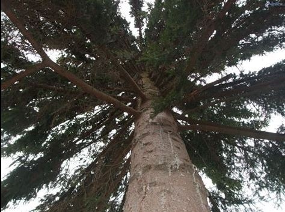

Abete rosso (Picea abies)
All’Abetone si trova l’unica abetina di abeti rossi spontanea dell’Appennino, nota come l’Abetina del Chiarugi. In questo punto di interesse non ne siamo lontani e quindi si trovano, sparsi fra gli abeti bianchi, alcuni abeti rossi spontanei. Anche questi alberi sono, come tutte le altre specie alpine presenti in questa valle, relitti glaciali, cioè organismi rimasti dopo il ritiro dei ghiacciai wurmiani, solo in certe zone, solo a certe condizioni microclimatiche. Si tratta di popolamenti estremamente delicati, fortemente minacciati dai cambiamenti climatici in atto.